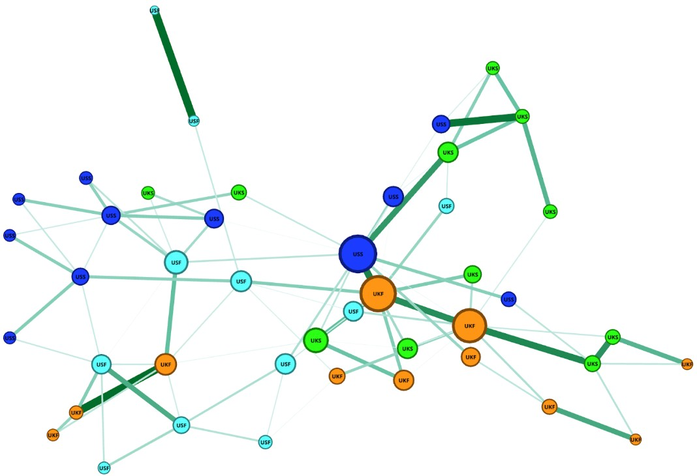
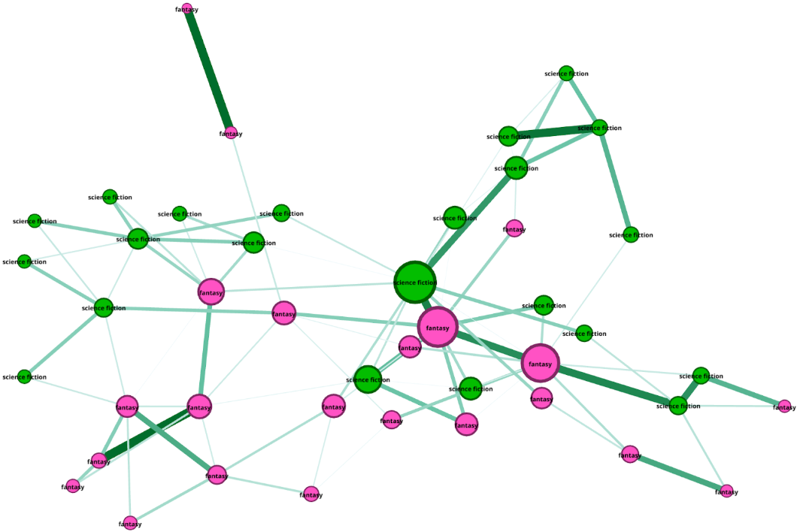
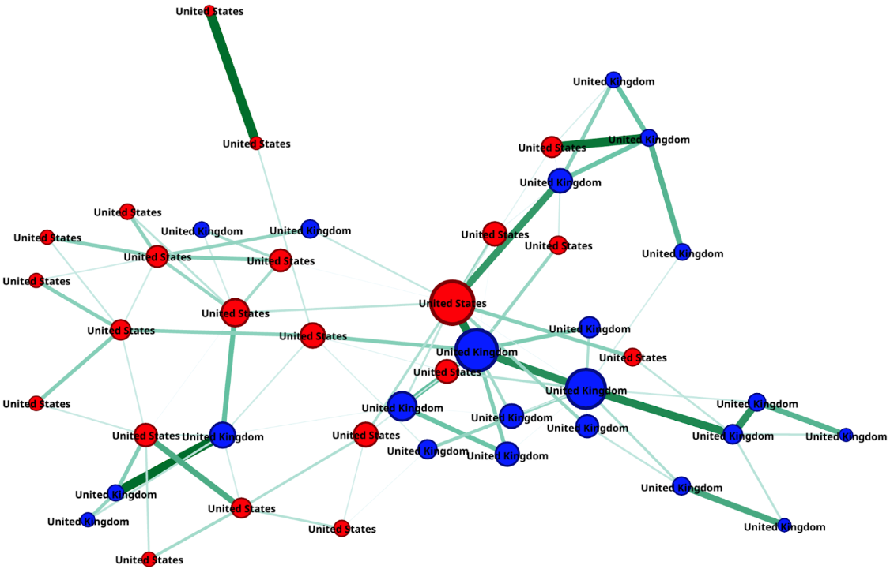
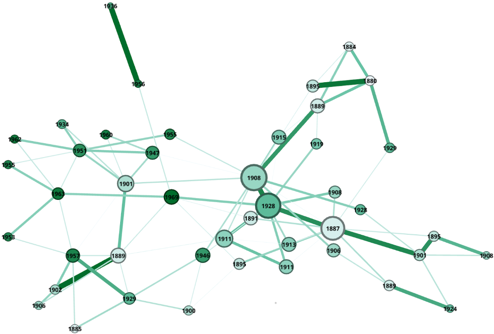
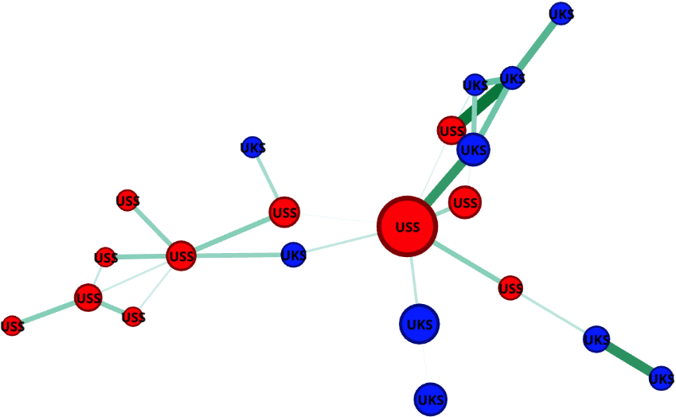
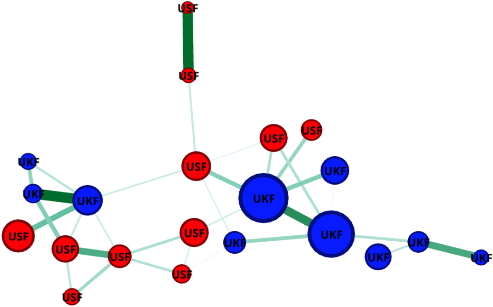
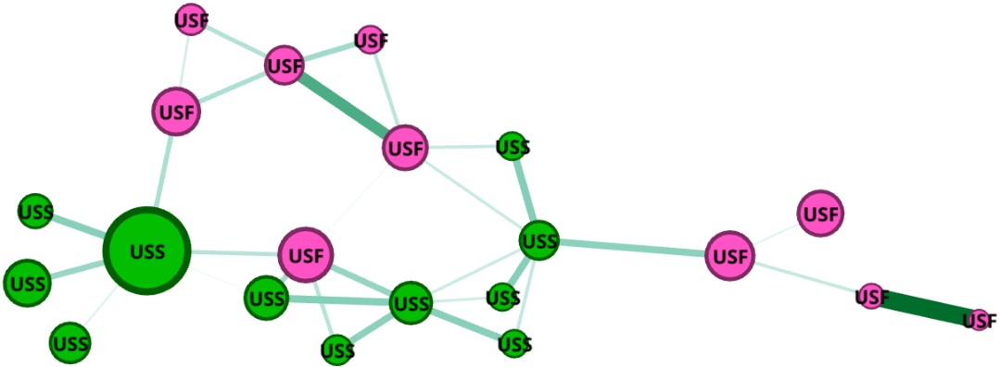
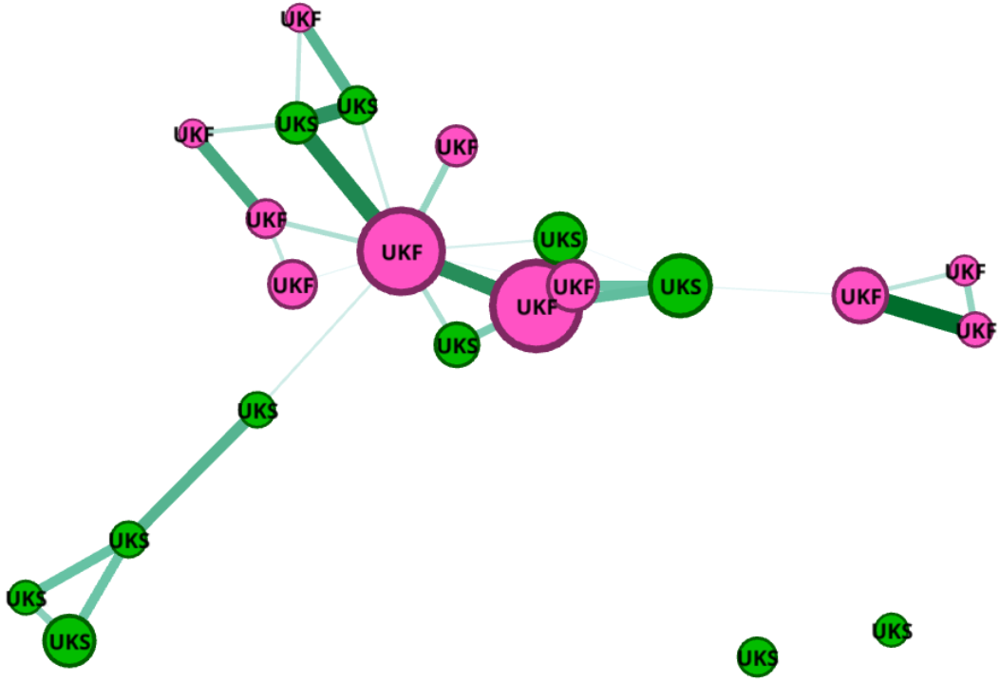

Analysis
Stylometric Analysis

The figure above shows the bootstrap consensus tree generated by Stylo. Stylo has run 900 iterations from 100 to 1000 MFW (Most Frequent Words) in order to solidify the credibility of the stylistic similarity between the novels. We have used Burrow's Delta as the distance measure, since it normalizes word frequencies into z-scores based on frequency and text-length, making it a suitable distance measure for stylistic analysis. The four categories can be identified by color and by prefix (USS, USF, UKF, UKS).
Around 16 novels (36% of the corpus) do not cluster to any other novel in the corpus (this is visible in the top of the consensus tree). In the rest of the corpus, twelve clusters appear in the consensus tree, each consisting of two to three novels. Five clusters are categorically homogenous: three US fantasy clusters and two UK fantasy clusters. The other six clusters are hybrid, but most of them have either the genre or the author's nationality in common. In the table below, you find an overview of the (sub)categories and their cluster count.
| (Sub)category | Amount of Clusters |
|---|---|
| UK Fantasy | 3 |
| US Fantasy | 2 |
| Science-Fiction | 2 |
| Fantasy | 0 |
| US | 1 |
| UK | 2 |
| No overlapping category | 2 |
The main takeaway from this stylometric analysis is that there seems to be a lot of stylistic diversity in this corpus, since many novels do not cluster in the consensus tree. However, 28 novels did cluster in groups of 2 or 3 novels. It looks like fantasy novels cluster strongly based on the subcategory of the author's nationality (three UKF and two USF clusters). This indicates a stylistic distinction between UK and US authored fantasy novels. For science fiction novels, there are no completely homogeneous clusters where the authors all share the same nationality.
One limitation of the bootstrap consensus tree is that the clustering is no guarantee for stylistic closeness. It only indicates that the novels in the cluster are closer to each other than to other novels in the corpus. Furthermore, the consensus tree of clusters might obscure weaker similarities between novels. In order to represent these weaker stylistic similarities and make a more spatial representation of this data, we exported the novels to a table of nodes and the calculated similarity scores to a table of weighted edges in order to apply network analysis.
| (Sub)category | Amount of Clusters |
|---|---|
| UK Fantasy | 3 |
| US Fantasy | 2 |
| Science-Fiction | 2 |
| Fantasy | 0 |
| US | 1 |
| UK | 2 |
| No overlapping category | 2 |
Network Analysis

Figure 2 shows that there is generally a lot of stylistic overlap across the 4 categories. Novels with authors from the UK (orange and green nodes) are generally more dominant on the right side of the graph, while the novels by US authors seem to cluster on the left side. On the left, we see six darkblue US science fiction nodes, which most resembles a cluster in this representation of the graph. This creates an interesting contrast to the bootstrap consensus tree, where there weren't any clusters that were exclusivelyUS science-fiction. As is indicated by the lighter opacity of the edges between the dark blue nodes on the left side of the graph, the stylistic similarity is moderate. In the consensus tree this connection was too weak to create a cluster, but in the network representation a cluster of US science fiction can be identified, even though the stylistic similarities are moderate.
The main interpretation of this network graph comes down to the fact that no very strong clusters exist in these graphs. The division between the US on the right and UK on the left is general and broad, and the four categories seem very interconnected. This indicates a broad general overlap in style across the different categories.
The node size in figure 2 (and all the other) is scaled after the Eigenvector centrality of each node. This centrality measure takes into account not only the weight of the edges, but also the (weighted) edges of connected nodes, indicating how 'influential' a node is based on the entire network rather than only its neighbours. Two nodes stand out with a high Eigenvector centrality measure: The Iron Heel from 1908 by Jack London (USS) and The Eternal Moment from 1928 by E.M. Forster (UKF). These two novels have no common nationality or genre, but are stylistically very close, since the edge between them is dark green ( and they form a cluster in figure 1). They both have stylistic connections with many other other novels. These two novels seem to tie together the US novels on the left and the UK novels on the right of the graph.

Figure 3 portrays the same graph as in figure 2, but now the colour coding is based on genre only. The pink nodes, representing the fantasy novels, appear more at the bottom of the graph, except for the two nodes on the top left, and these are only weakly connected to another pink node. However, there are many interconnected nodes among science-fiction and fantasy novels. There don't appear to be any explicit cliques that are exclusively one genre.

As was already discussed in the analysis of figure 2, most UK novels appear on the right and most US novels appear on the left side of the graph, but still there are no completely homogenous clusters. This becomes especially visible in figure 4, where the colour coding is based on the nationality of the author.

In figure 5, the node's colour represents the year the novel was published. Lighter green nodes are earlier, and darker green nodes are later. Except for some darker green on the right side and the four earlier novels on the top right, dark and green novels appear quite scattered, indicating that the year of publication does not necessarily play an integral role in the stylistic similarities between the novels in the corpus.

When isolating the corpus to only science fiction novels, we encounter a cluster of US novels on the left (see figure 6). On the top right and bottom right, we see most of the UK novels gathered. There are also two instances in which a US novel and a UK novel have a very dark edge, meaning they are relatively stylistically similar.

When isolating the fantasy novels and reapplying the Yifan Hu algorithm, it seems that all the strongest stylistic similarities (darkest green edges) are between authors with a shared nationality. This actually indicates that for this subcorpus of fantasy novels, the nationality of the author is a strong indicator for stylistic similarity.

When isolating all novels by US authors, we find that the strongest stylistic similarities, indicated by dark green edge lines, are between fantasy novels (see bottom right in figure 8). There is also a clear pink cluster at the top and a green cluster at the middle/bottom.

In figure 9 we see only UK authored novels represented in a network. On the right we see a cluster of fantasy novels and on the bottom-left a cluster of science fiction novels. However, the majority of the novels appear to be quite interconnected at the top in the middle. Overall, the edges are relatively dark green, indicating a high stylistic similarity among UK authors, at least compared to US authors (figure 8).
Discussion & Conclusion
From the results of the stylometric analysis, this study has found that fantasy novels cluster strongly based on the subcategory of the nationality of the authors (UK and US), rather than genres (fantasy and science fiction). Three fantasy authors from the UK were observed in one cluster and two US authors also clustered in the same genre. This suggests that the distinction between nationality is more significant between stylistic similarity, than perhaps the genres of science fiction or fantasy that authors are writing from (Goossens, Jacquot & Dyka, 2019; Feng & Liu, 2023). Literary scholarship also corroborates this result, suggesting that there is a distinction between literary styles in the UK and the US and particularly between fantasy and science fiction novels. Literature also states that in particular, British authors tend to cluster specifically in stylistic similarities within fantasy novels, suggesting a wider consensus in the result of this stylometric analysis (Glinka et al, 2021).
It is important to note that clustering in stylo does not necessarily indicate stylistic closeness, suggesting that further research was needed to validate this result, and to gain more insight into the dataset. It is for this reason that a subsequent in detailed network analysis of the novels in this corpus in order to gain an insight into additional connections between these authors. From this analysis, multiple insights have been gained, with an overarching finding being that there was generally a substantial stylistic similarity between authors across all 4 categories, when examining the corpus together. However, when broken down into subgroups and analysed, additional findings revealed a more complex picture. In particular, although there were many interconnected nodes between science fiction and fantasy novels, novels tended to be more divided when it came to the nationality of authors, with UK and US authors tending to cluster on separate sides of the frames, but not as completely homogenous clusters. The year of publication also did not necessarily play a significant role in any stylistic similarities, and additional analyses also indicated distinctions between UK and US authors in style, suggesting this to be the most significant factor in determining stylistic similarity. This lack of distinction in clustering between the two genres of science fiction and fantasy links to wider literary discourse which suggests a “fuzzi-ness” between the two genres, leading one to consider that these categories may contain some stylistic overlap (Menadue, Giselsson & Guez, 2020).
Nevertheless, there are also two instances in the analysis in which UK and US authors also appear to be stylistically interlinked. In particular two nodes which were observed in both Stylo's bootstrap consensus tree and in the network analysis with a high Eigenvector centrality measure were The Iron Heel from 1908 by Jack London (US science fiction) and The Eternal Moment from 1928 by E.M. Forster (UK fantasy). The stylistic closeness of these two novels and yet the twofold variation in their nationality and genre is a notable observation of this research, revealing that stylistic interconnectedness can and does transcend such categories. Yet, most other nodes in this analysis tended to be divided by nationality, whilst there did not appear to be any explicit cliques when comparing science fiction or fantasy genres alone. Yet, within this identification of moderate stylistic clustering between authors of particular nationalities, it was also found that UK authors, and particularly that of UK fantasy authors, tended to offer some of the strongest stylistic similarities of the corpus, with a comparison between UK and US fantasy authors revealing significant stylistic connections between UK fantasy authors. This showed the strongest similarities in this study tended to exist between authors of a shared nationality, with UK science fiction authors also indicating a high stylistic similarity in analyses when compared to US authors. The findings from Gephi therefore reinforce the findings of Stylo, which also identified a significant link between British authors and stylistic similarity, with both findings of each analysis reinforcing the findings observed in wider discourse (Glinka et al, 2021).
In conclusion, the findings of this study have revealed that despite the existence of differing definitions of science fiction and fantasy genres, significant stylistic differences between these two literary genres alone were not explicitly observed. Nonetheless both UK and US authors, despite sharing some stylistic similarities, and in some cases stylistic connections between authors of different nationalities and genre categories, largely remained divided by author nationality. Moreover, in the case of UK authors, both Stylo and Gephi analyses revealed a particular stylistic connection between fantasy authors of British origin, when compared to authors from the US. Similarly, findings also revealed a similar clustering of British stylistic closeness when comparing British science fiction with US science fiction authors, indicating that although both genre categories and author nationalities play a role in stylistic similarity, author nationality, though indication only a moderate stylistic closeness, was the most significant in indicating stylistic closeness of the categories examined in the study of this corpus.
Bibliography
Feng, X., & Liu, B. (2023). A historical study of the British and American definitions of science fiction and related controversies. Cultures of Science, 6(4), 353-362. https://doi.org/10.1177/20966083231216125
Goossens, V., Jacquot, C., & Dyka, S. (2019). Science Fiction versus Fantasy: A Semantic Categorization and its Contribution to Distinguishing Two Literary Genres. In Phraseology and Style in Subgenres of the Novel (pp. 189-221). https://doi.org/10.1007/978-3-030-23744-8_7
Glinka, Natalia and Zaichenko, Yuliia and Machulianska, Anastasiia. (2021). Stylistic Portrait of English Fantasy Texts (Based on Jordan's The Eye of the World, Martin's A Game of Thrones, Rowling's Harry Potter and the Philosopher's Stone, and Harry Potter and the Chamber of Secrets). Arab World English Journal (AWEJ) Volume 12. http://dx.doi.org/10.2139/ssrn.3952947